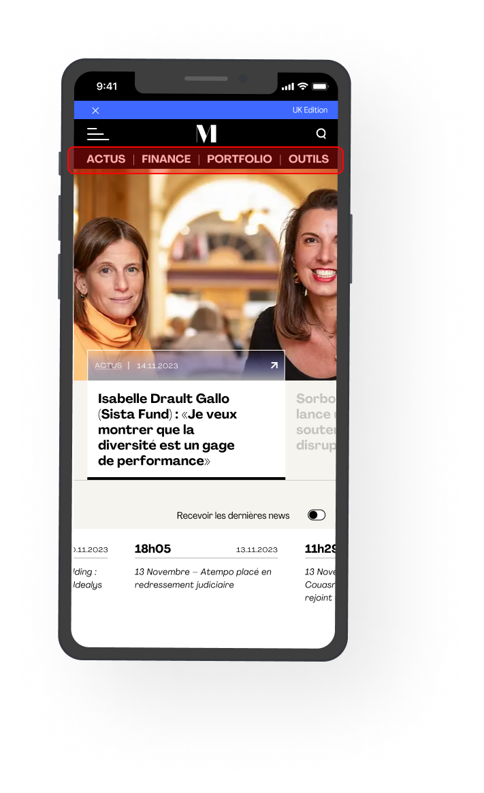
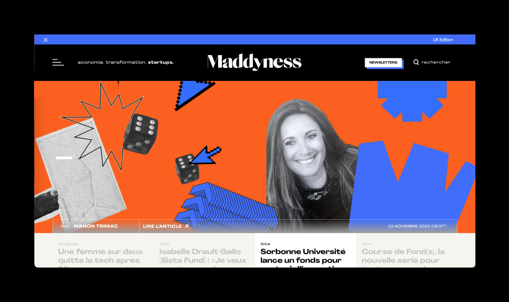
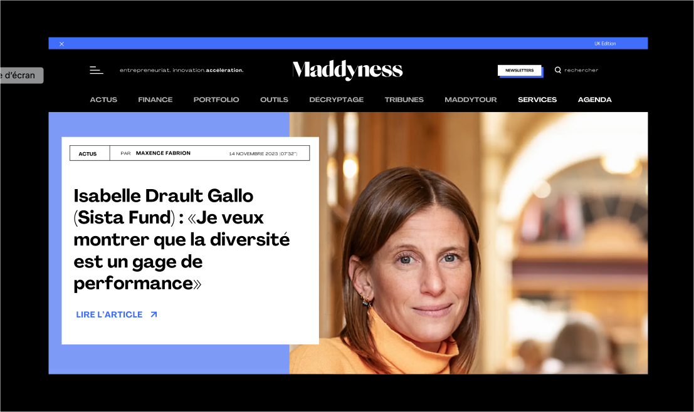

Style, accessibilité, UX
Différents points traités pour améliorer le site : la navigation, le header, les
hero sections, le parcours e-commerce.
Header
Le header reste fixe y compris sa navigation horinzontale.
Sur les pages d'article unique, le header n'est plus transparent, il garde son background noir.
Navigation
Sur écran d'ordinateur : navigation horizontale visible et accessible dès
l'arrivée sur une page sans
necessité
de
scoller ni de passer
sa souris. Une navigation plus accessible.
En version mobile, une navigation rapide est proposée afin de rendre accessible des
catégories,
des
rubriques ou même
directement
des articles depuis le header sans avoir à cliquer sur le hamburger. Ils se trouveraient
sous
forme de
navigation
horizontale directement sous le logo (rapidement, voici à quoi cela ressemble)

Hero sections
Sur la home page, les titres et meta des articles à la une ne sont pas mis en avant
: les titres des articles dépassent les 100vh (c'est à dire la hauteur de mon écran) ce qui fait
qu'il
faut scroller pour pouvoir lire les
titres entièrement. Les méta (principalement la date de publication) sont peu visibles et le CTA
(lire
l'article) également.
Je propose un seul (deux max) article à la une.
L'image apparait comme une banniere web, le titre n'est pas mis en avant. Il faut scroller pour
pouvoir voir les
titres des articles à la une. Je pense qu'il faut donner moins de place à l'image et plus au
titre. La date est
peu visible également.
Sur la page des articles, placer l'image sous le header dont la background est noir. Déplacer les métas
sous le titre h1

Avant
Le menu de navigation horizontal est masqué à l'arrivée sur la page. Il
faut
scroller
ou passer la
souris pour le faire apparaitre/disparaitre.
L'image apparait comme un bannière web. Le titre de l'article n'est pas
entièrement
visible, il faut
scroller. Les titres et méta ne sont pas mis en avant.

Après
Le menu de navigation horizontal est visible dès l'arrivé sur la page. Aucune
animation au scroll ni
au hover.
On donne un peu moins de place à l'image et plus au titre de l'article ainsi que
ces
métas. Toutes
les informations concernant l'article à la une sont visible dès l'arrivée sur la home
page.
Le shop
Le produit proposé dans le shop est un peu trop "caché".. difficile d'accès. Je compte 4 clics à
partir du
hamburger. Ceci est peut-être voulu pour X raison. Si ce n'est pas le cas, j'aimerais proposer
l'amélioration du
parcours, lorsque je clique sur "shop", un sous menu pourrais se déplier directement avec le nom
du
produit ou
bien "livre". Lorsque j'arrive sur la catégorie, il faut scroller pour voir le produit. Je pense
que
l'idéal
serait d'avoir un texte en hero plus discret et de pouvoir voir le prodiut tout de suite, sans
avoir
à scroller.
J'arrive enfin sur la page produit, le livre est en rupture de stock. Victime de son succès, ce
n'est pas une si
mauvaise nouvelle mais... où se trouve le bouton pour être prévenu lorsqu'il sera de nouveau en
stock ? Sinon, à
quoi sert d'avoir fait tout ce parcours pour tomber sur un seul bouton non cliquable ? Avec plus
de
contexte,
j'apporterais des idées d'amélioration pertinentes pour cette partie e-commerce.
Process
Après validation, on découpera par étape. Il faut tester et vérifier si ces
modifications ont un impact sur la version mobile et tablette.
Ici on parle principalement du style, de l'accessibilité et de l'expérience utilisateur. En fonction
de
la manière dont sont fait ces éléments du site (codés en dur ou créés avec un constructeur de thème
ou un
plugin par exemple)
on modifiera simplement ce qui existe déjà. Nous testerons le rendu, le temps de chargement pour
vérifier
que nos modifications de style n'ont pas alourdies le site.
Concernant le parcours produit, plusieurs idées sont bonnes à prendre, avec plus de contexte, cette
partie peut etre largement améliorée. Pour commencer on pourrait simplement ajouter un sous menu
dans le hamburger "shop -> le livre" pour accéder directement au produit ou bien supprimer une étape
pour arriver directement sur la catégorie livre puisque c'est l'unique catégorie. Si le livre à pour
objectif de continuer d'être vendu, il serait bien d'intégrer un bouton pour être alerté.e lorsque
le livre sera de nouveau en stock.
Concernant le menu et la lisibilité des titres d'article, la priorité est plutôt haute. Concernant la
partie shop, je n'ai pas assez de contexte pour évaluer.
Bonus !
J'aimerais exposer grossièrement quelques idées supplémentaires pour le site Maddyness
Outils et ressources
En parcourant ces rubriques m'est venu l'idée de proposer des comparateurs. Sur Maddyness sont présentés
des
outils, ces outils comme Alan et ses concurrents pourraient être comparés directement dans un tableau
dynamique
sur une page dédiée du site.
Les prix, les fonctionnalités etc par exemple. Par tableau dynamique j'entends que l'utilisateur.trice
puisse
selectionner 2 ou 3 outils par des dropdown et le tableau afficherait les données dynamiquement.
Par quels moyens ?
Le site web étant développé sur WordPress, il est judicieux d'utiliser le plugin ACF. A l'aide d'ACF et
quelques
lignes de PHP (création d'un fichier single_comparative_outil.php par exemple), on retrouvera sur la B.O un
nouvel onglet "Outils à comparer".
Sur le back office, après avoir cliqué sur "ajouter un nouvel outil à comparer" nous trouvons une
page avec
des inputs ou textarea pour chaque champ, il faut simplement remplir les données "Nom -> Alan", "Prix
-> --€",
"Avantages -> les avantages en 3 mots", "Fonctionnalités -> ..."
Sur la page de comparateur d'outils sont présents par exemple 3 dropdowns par lesquels il est
possible de
selectionner 3 outils différents. Un tableau s'affiche avec les champs correspondants.
Cette idée est dans l'optique d'apporter un produit plus complet aux
utilisateurs et d'essayer de récupérer du traffic sur certains mots clés "Comparer..", "Choisir..", "Nom de
l'outil"
Pour aller de pair avec ça, pourquoi pas développer une fonctionnalité de simulation. A voir si cela est
interessant directement sur le site ou un ...
Simuler mon business plan - Simuler sa rentabilité ...
Rencontres et opportunités
Créer un espace dédié à la mise en relation entre les talents, les idées, les entrepreuneurs qui
recherche collaborateurs et ceux/celles qui recherchent à financer un projet.